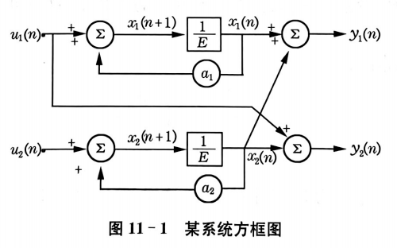

揭开系统内部状态的神秘面纱 (State-Space Models)
F5 开启全屏放映 | 单击鼠标步进讲解
手机导航看到的不是你的“真实位置”，而是带误差的定位信号；汽车真正的状态还包括位置、速度、方向和加速度。状态空间模型要做的事，就是把这些看不见的内部状态组织起来，再用不断到来的观测值修正它。
学习主线：实际问题导入 → 状态变量定义 → 输入输出与噪声 → 状态方程和输出方程 → 递推预测 → 卡尔曼滤波更新。本章是训练一种“从现象反推系统内部机制”的思维。
构建连接内部状态与外部量测的桥梁
某奶茶店每天记录销量 $Y_k$，也知道当天是否做促销 $U_k$。但真正决定未来销量的，可能是看不见的“潜在热度” $X_k$：口碑、社交平台讨论、附近人流、天气心情，混在一起，像一锅统计学麻辣烫。
结论：状态空间模型不是直接问“明天销量是多少”，而是先问“今天隐藏热度是多少、明天会怎样变、销量怎样反映热度”。
手机显示的电量百分比 $Y_k$ 不一定等于真实剩余电量状态 $X_k$。后台运行、屏幕亮度、网络信号和电池老化都会影响下一时刻电量。于是我们自然得到两个问题：真实电量怎样随时间变化？显示电量怎样由真实电量产生？
真实电量受到上一时刻电量和使用强度影响。
$U_k$ 可以是屏幕亮度、应用负载；$W_k$ 是突发耗电扰动。
显示电量是对真实电量的测量，但可能有显示误差。
$V_k$ 是量测或显示误差。电量突然从 17% 跳到 12%，不是玄学，是噪声和模型在互相甩锅。
带着这个例子看本节：状态空间模型的核心就是“两条线”：一条线描述真实状态如何演化，另一条线描述观测值如何生成。
状态空间模型是动态时域模型，以隐含着的时间为自变量。它完美地将系统拆分为两个相互咬合的齿轮：
在实际应用中，最广泛且最成熟的是线性时不变模型。
线性： 组合输入产生对应的组合输出。
时不变： 系统的固有特性不随时间推移而改变（输入延迟，输出等量延迟）。
状态空间模型不是一种单一模型，而是一套“描述动态系统”的语言。分类维度可以自由组合，所以先把路线图画出来。
如果只知道一辆车现在的位置，很难判断下一秒在哪里；但如果同时知道位置和速度，预测就靠谱多了。所以状态不是“随便选几个变量”，而是要包含足以描述未来演化的关键信息。
离散时间随机性动态系统理论中，最核心的概念就是“状态”。
系统在 $k_0$ 时刻的状态，是系统在 $k < k_0$ 时所有过去储能和信息的浓缩积累。它包含了系统的全部历史，并足以用它来推演系统的未来行为。
我们用一个向量来刻画这个“总信息包”：
$X(k)$ 被称为状态向量，$x_i(k)$ 是第 $i$ 个状态变量。
状态向量所能取的一切可能值的集合，构成了状态空间。初始时刻 $k_0$ 的向量 $X(k_0)$ (或 $X(0)$) 称为初始状态向量（初态）。
房间真实温度是内部状态 $X_k$，空调功率是输入 $U_k$，温度计读数是输出 $Y_k$。开门、阳光、人群进入会改变真实温度，这是动态噪声 $W_k$；温度计本身不准，这是量测噪声 $V_k$。
结论：输入是我们施加或已知的影响，输出是我们观测到的结果；$W_k$ 让真实系统乱动，$V_k$ 让观测结果不准。别混，混了就像把空调坏了怪到温度计头上。
若输入 $X_{1t}$ 产生输出 $Y_{1t}$，输入 $X_{2t}$ 产生输出 $Y_{2t}$，那么组合输入也应产生组合输出：
例：促销投入翻倍，输出影响也按比例变化，这才叫线性。
如果输入整体延迟 $t_0$，输出也只是整体延迟 $t_0$，系统规律没有偷偷换剧本：
例：同样的促销策略在不同月份产生同样机制的影响。若节假日、政策、市场结构改变，时不变假设就要谨慎。
总结：线性问“能不能按比例叠加”，时不变问“同样机制是否一直有效”。二者不是一回事，别混成一锅符号粥。
系统在 $k_0$ 时刻的状态不是凭空出现的，它是过去信息和系统储能的压缩包。状态变量选得好，就不必把全部历史数据拖着走。
很多情况下，内部状态 $X(k)$ 像黑盒一样无法直接测量。我们能接触到的，只有系统的外部接口：输入与输出。
确定性输入向量 $U(k)$：
外部施加给系统的已知控制变量或作用力。
动态模型噪声 $W(k)$：
系统内部运转时受到的不可控随机干扰（特殊输入）。
输出向量 $Y(k)$：
通过传感器或统计手段实际观测到的系统外部表现。
测量噪声 $V(k)$：
在观测或记录数据时引入的测量误差。
综合上述元素，我们将系统从输入 $U(k)$ 到输出 $Y(k)$ 的变换过程，用非线性向量函数的一般形式表示为：
在应用统计学中最常用的是线性形式。状态方程和输出方程可以写成优雅的矩阵形式：
线性时不变状态空间模型可以看成一条清晰的流水线：$A$ 管状态惯性，$B$ 管输入作用，$C$ 管如何被看见，$D$ 管输入是否直接进输出。
状态空间模型是描述动态系统的完整骨架。它的强大之处在于提供了一套随着时间推移的 自动推演机制：给定初始状态和输入，系统就能一阶段一阶段向前递推。
当我们给定：
模型便可逐期推演导出：
看图理解：横向箭头表示“状态向未来递推”，纵向箭头表示“内部状态生成外部观测”。 后续卡尔曼滤波就是在这个基础上不断用新观测修正状态估计。
某产品销量有两个隐藏成分：当前销售水平 $L_k$ 和增长趋势 $G_k$。我们看到的是销量 $Y_k$，但真正想预测的是下一期水平和趋势怎样变化。于是自然写成状态向量。
水平会叠加趋势，趋势暂时保持。这个 $A$ 矩阵不是装饰品，是规则本体。
观测销量主要看到“水平”，看不到隐藏趋势；趋势要通过连续观测慢慢推断。
结论：状态空间模型的两条方程不是背出来的，而是把“系统内部如何演化”和“外部观测如何生成”翻译成数学语言。
它不是单纯拿过去的 $Y_t$ 去猜未来的 $Y_{t+1}$，而是先假定系统背后有一个看不见的“内部状态” $X_t$，再用观测值 $Y_t$ 去反推和更新这个内部状态。说白了：不是只看成绩单，而是试图推断学生真实水平
区分状态、输入、输出、系统噪声和量测噪声，知道每个符号在模型里扮演什么角色。
理解两个方程：状态方程负责“内部如何变”，输出方程负责“外部如何看见”。
能把销售额、价格指数、车辆位置、经济景气等问题改写为状态空间形式。
只要问题同时具备“动态演化”和“观测有噪声”，状态空间模型就很香。
不适合机械使用的情况：数据完全静态、无明显时间递推关系，或者只有一个孤立截面样本。硬套状态空间模型，就像给一碗螺蛳粉装自动驾驶系统，科技感很足，必要性很低。
| 符号 | 名称 | 通俗解释 | 例子 |
|---|---|---|---|
| $X_k$ | 状态向量 | 系统内部真正想知道但未必能直接看到的东西 | 真实需求、真实位置、潜在趋势 |
| $U_k$ | 输入向量 | 外部给系统的已知影响因素 | 促销力度、政策变量、控制量 |
| $W_k$ | 动态噪声 | 状态演化时出现的随机扰动 | 突发需求、供应冲击、天气影响 |
| $Y_k$ | 输出/量测向量 | 实际观测到的数据 | 实际销量、传感器位置、价格指数 |
| $V_k$ | 量测噪声 | 观测过程中的误差 | 统计误差、传感器误差、登记误差 |
| $A$ | 状态转移矩阵 | 内部状态自己如何延续到下一期 | 本月需求影响下月需求 |
| $B$ | 输入矩阵 | 外部输入如何改变内部状态 | 促销对潜在需求的影响 |
| $C$ | 输出矩阵 | 内部状态如何表现为观测值 | 真实需求转化为销量观测 |
| $D$ | 直接传递矩阵 | 输入是否直接影响输出 | 当期广告直接推高当期销量 |
某网店的“潜在需求水平”无法直接观测，但会受到上一期需求和促销投入影响。实际销售额是潜在需求的观测值，但会存在记录误差。先不考虑噪声，练清楚模型骨架。
令 $X_k$ 表示第 $k$ 期潜在需求，$U_k$ 表示第 $k$ 期促销投入，$Y_k$ 表示实际销售额。
解释：$0.8X_k$ 表示需求有惯性但会自然衰减，$2U_k$ 表示促销投入会把潜在需求往上推。状态方程负责“需求怎么变”，输出方程负责“我们看到什么”。
逻辑总结：给定初态和输入序列后，状态方程让系统一步一步往前走；输出方程把每一步的内部状态转化为可观察结果。这个递推思想就是后面卡尔曼滤波的地基。
某产品销售额既有当前水平，又有增长趋势。只用一个状态变量会太粗糙，因此令状态向量同时包含“水平”和“趋势”。
其中 $L_k$ 表示第 $k$ 期销售水平，$G_k$ 表示每期增长量。
已知初始销售水平为 200 万元，每期增长量为 12 万元，即 $X_0=(200,12)^T$。求未来三期的状态和预测销售额。
| 时期 | 状态递推 | 状态结果 | 输出预测 |
|---|---|---|---|
| $k=1$ | $X_1=AX_0$ | $(212,12)^T$ | $Y_1=212$ |
| $k=2$ | $X_2=AX_1$ | $(224,12)^T$ | $Y_2=224$ |
| $k=3$ | $X_3=AX_2$ | $(236,12)^T$ | $Y_3=236$ |
提示： $A$ 矩阵的意义：第一行 $[1,1]$ 把“水平”和“趋势”合并成下一期水平；第二行 $[0,1]$ 表示趋势保持不变。
从文字描述、方框图和时间序列中提取状态方程
实际预测中，系统不会像例题那样乖乖按公式走。于是我们加入两个噪声：一个影响系统真实演化，一个影响观测结果。
进入状态方程，表示系统真实状态在演化过程中被随机因素推动或扰动。
例：突然爆单、政策变化、供应链延迟、天气冲击。
进入输出方程，表示真实状态被观测时产生误差。
例：统计误差、录入误差、抽样误差、传感器误差。
一句话区分：$W_k$ 是“真实世界自己乱动”，$V_k$ 是“我们看世界时看歪了”。这两种乱不能混，不然模型会把现实的锅甩给测量，把测量的锅甩给现实。
状态空间模型的价值不在于把符号排得很整齐，而在于它能随着时间递推： 输入改变内部状态，内部状态再生成输出。换句话说，它不是静态表格，而是一台会往前滚动的系统机器。
看图口诀：蓝色状态包沿轨道滚动，绿色输入推动它，橙色量测修正它，紫色端口输出预测结果。
状态空间模型表达的是：由于输入 $U$ 的作用，系统内部状态 $X$ 发生变化；内部状态变化后，外部输出 $Y$ 也随之变化。
当系统参数不随时间改变，且状态和输入以线性方式影响下一期状态时，可写为：
其中 $X$ 为 $n$ 维状态向量，$A$ 为 $n\times n$ 转移矩阵，$B$ 为 $n\times r$ 输入矩阵，$U$ 为 $r\times1$ 输入向量，$Y$ 为 $m\times1$ 输出向量，$C$ 为 $m\times n$ 输出矩阵。
当输入和输出本身具有随机性时，可把随机扰动直接写进模型：
向量 $a_t,b_t$ 是白噪声，且二者相互独立。一个负责系统内部乱动，一个负责观测端添乱，分工相当清楚，混起来就很糟糕。
如果给你森林蓄积量、股票价格、离散方框图、经济时间序列，你会发现它们长得完全不像。但状态空间方法会问同一个问题：系统内部最关键的状态是什么？状态怎样变？我们看见的输出是什么？
状态是各树种蓄积，输入是新增蓄积和消耗。
差分后建立二维状态，用白噪声描述市场扰动。
每个延时单元都暗示一个状态变量。
把趋势、周期、季节拆成状态分量。
输入可理解为松木、杉木、阔叶树新增蓄积量，以及总蓄积消耗量。
可设 $P_1=0.03,P_2=0.06,P_3=0.02$。$B$ 的最后一列表示总消耗量按比例分摊到三类树种。
这里输出矩阵为单位阵，表示量测向量就是三类树种蓄积状态本身。
建模逻辑：每个树种下一期蓄积量 = 本期蓄积自然增长 + 对应新增蓄积 + 消耗分摊。矩阵写法只是把三条式子合并。
选取 IBM 股票收盘价，先做差分处理，使其形成近似零均值平稳序列，再通过分块 Hankel 矩阵方法识别状态空间结构。股票市场当然不会乖，但至少模型能给它安排一个座位。
补充说明：状态向量协方差矩阵可设为 $\begin{pmatrix}0.09&-0.05\\-0.005&0.11\end{pmatrix}$，输出向量协方差约为 52.54，系统方差约为 52.27。重点理解“平稳化 → 状态识别 → 预测”的流程。
方框图中 $1/E$ 表示延时单元：左边输入 $X(k+1)$，右边输出 $X(k)$。有几个延时单元，通常就可以设置几个状态变量。

状态方程：状态由自身反馈项和输入项共同决定。
输出方程：输出可以由状态直接组合，也可以受到输入的直接影响。
经济时间序列 $y(k)$ 往往包含长期趋势、循环波动、季节变动和不规则扰动。状态空间模型的做法是把这些“看不见的成分”放进状态向量，再通过输出方程把它们加起来。
乘法模型 $y(k)=T(k)C(k)S(k)V(k)$ 可以通过取对数转化为加法模型，因此课堂重点放在加法形式。
$m=3$ 表示季度资料，$m=12$ 表示月度资料。季节项本质上是“本期季节由过去季节共同约束”。
解释：趋势负责慢慢走，循环负责几年一波，季节负责一年内重复，不规则项负责突然冒出来添堵。状态空间模型把它们拆开，是为了更清楚地预测和解释。
输出只取当前趋势 $T(k)$、当前循环 $C(k)$ 和当前季节 $S(k)$，再加上观测噪声。
待估计内容：噪声 $\xi(k),\eta(k),e(k),W(k),V(k)$ 的方差，以及循环项中的自回归系数 $\alpha_1,\alpha_2$。这就是后续滤波和参数估计要处理的活儿。
方法优势：能把“趋势变化”“外部投入”“观测误差”放进同一个框架。
方法要求：需要合理定义状态变量，并估计矩阵参数。状态变量定义得离谱，模型就会很认真地胡说八道。
状态空间模型的本质是：用看得见的输出 $Y_k$，结合已知输入 $U_k$，去描述和预测看不见但关键的内部状态 $X_k$。
| 步骤 | 要做什么 | |
|---|---|---|
| 1 | 识别系统 | 先问：系统里有没有“看不见但重要”的东西？ |
| 2 | 定义状态 | 把内部核心变量写成 $X_k$。 |
| 3 | 确定输入 | 把外部可控或已知影响写成 $U_k$。 |
| 4 | 建立状态方程 | 说明 $X_k$ 怎样变成 $X_{k+1}$。 |
| 5 | 建立输出方程 | 说明 $X_k$ 怎样生成观测值 $Y_k$。 |
| 6 | 加入噪声 | 承认系统会乱动，观测会出错，数学总算有点诚实。 |
| 7 | 递推预测 | 由初态和输入序列逐期推演未来状态与输出。 |
承上启下：本节只是建立模型结构。下一步要解决的问题是：既然状态 $X_k$ 看不见，怎样根据不断到来的观测值 $Y_k$ 去更新它？答案就是卡尔曼滤波。
某城市新能源车经销商希望预测未来销量。实际月销量 $Y_k$ 会受到库存、登记延迟、促销活动和随机波动影响，因此它不完全等于真实潜在需求。我们用状态空间模型估计“潜在需求水平”和“需求增长趋势”。
| 月份 | 实际销量 $Y_k$ | 促销投入 $U_k$ | 说明 |
|---|---|---|---|
| 1 | 520 | 0 | 正常销售 |
| 2 | 548 | 1 | 轻度促销 |
| 3 | 575 | 1 | 轻度促销 |
| 4 | 640 | 2 | 大型车展促销 |
| 5 | 668 | 1 | 热度延续 |
| 6 | 690 | 0 | 正常销售 |
建模目标：用前 6 个月信息构建状态空间表达，预测第 7、8 月潜在需求和销售额。
促销投入会提高下一期潜在需求水平，但对长期趋势影响较小。
解释：$L_{k+1}=L_k+G_k+15U_k$，表示下月需求水平由本月水平、本月增长趋势和促销刺激共同决定；$G_{k+1}=0.9G_k+2U_k$，表示增长趋势会慢慢衰减，但促销可略微提振趋势。
假设经过前 6 个月数据更新后，得到第 6 月的状态估计为：
即第 6 月潜在需求约为 690 辆，月增长趋势约为 24 辆。计划第 6 月之后不做促销，故 $U_6=0$。
若第 7 月仍无促销，$U_7=0$，继续由第 7 月状态向第 8 月递推。
| 月份 | 潜在需求预测 $\hat{L}_k$ | 趋势预测 $\hat{G}_k$ | 销量预测 $\hat{Y}_k$ |
|---|---|---|---|
| 7 | 714.0 | 21.6 | 714.0 |
| 8 | 735.6 | 19.44 | 735.6 |
业务解释：即使不继续促销，前期形成的需求水平仍会延续，但增长趋势逐步减弱。这比“简单平均一下销量”更合理，因为它把“当前水平”和“增长速度”分开了。
到这里，模型结构已经搭好了。但真正麻烦的问题来了：状态 $X_k$ 往往看不见，而我们只能看到带噪声的 $Y_k$。所以需要一种方法，把“模型预测”和“新观测”合并起来，动态更新状态估计。
方法要求：需要合理定义状态变量，并估计矩阵参数。
用量测值重构看不见的状态
卡尔曼滤波的实质是由量测值重构系统状态向量。它按照 “预测－实测－修正” 的顺序递推： 先根据运动模型预测位置，再用 GPS 等量测值修正预测误差，最后得到更可信的当前位置。
根据上一时刻状态和运动规律，先得到预测位置。 例如：上一秒位置 + 速度 × 时间。
GPS、雷达或传感器给出新观测，但观测会带误差。 它有用，但不能全信，毕竟信号也会摸鱼。
卡尔曼滤波根据预测误差和观测误差，决定更相信模型还是更相信观测。 融合后的状态进入下一轮。
一句话：卡尔曼滤波不是“盲信模型”，也不是“盲信数据”，而是在每一时刻做一次加权修正。
设状态方程和输出方程为：
零输入分量：$A^{k+1}X(0)$，初态的贡献。
零状态分量：输入 $U(i)$ 的累计贡献。
随机干扰：噪声 $W(i)$ 的累计影响。
把状态方程的迭代解代入输出方程后，$y(k)$ 可以拆成几类来源： 初始状态的延续影响、历史输入的累计影响、历史系统噪声的累计影响、当期直接输入影响、当期量测噪声影响。 换句话说，当前输出不是凭空蹦出来的，而是过去和现在共同“汇流”的结果。
解释： $CA^kX(0)$ 表示初始状态一路传到现在的影响； 两个求和项表示历史输入和历史系统噪声逐期累积后的影响； $DU(k)$ 和 $V(k)$ 是当期直接进入输出的影响。 所以输出方程展开不是为了“把公式写长”，而是为了分清当前输出来自哪里。
随着时间推移，若陆续获得直到 $j$ 时刻的观测向量：
当 $k>j$，用已有观测预测未来状态。
当 $k=j$，用当前及过去观测估计当前状态。
当 $k\lt j$，用更多后续观测反推过去状态。
一句话：预测看未来，滤波看现在，平滑回头看过去。都是状态估计，只是站的位置不同。
预测步：先根据模型得到 $\hat X(k+1/k)$ 和误差协方差 $P(k+1/k)$。
修正步：用预测误差 $Y(k+1)-C\hat X(k+1/k)$ 修正状态估计。
卡尔曼增益 \(K(k+1)\) 的作用不是玄学调参，而是决定： 预测误差 \(Y(k+1)-C\hat X(k+1/k)\) 应该拿来修正多少。 增益大，修正多，更靠近观测；增益小，修正少，更靠近模型预测。
如果模型预测误差协方差较小，说明模型对下一步状态很有把握； 此时 \(K\) 较小，新的观测只能小幅修正预测值。
如果量测噪声 \(R_2\) 较小，说明观测值比较准； 此时 \(K\) 较大，修正后估计会明显靠近观测。
后半部分就是“修正量”：预测错了多少，乘以一个该信多少的权重。
本质： 卡尔曼增益是在模型不确定性和观测不确定性之间做平衡。 不是“模型和数据谁声音大听谁”，而是“谁更可靠，谁权重更大”。
优点很香，限制也别装看不见
状态空间模型开创了时间序列建模与分析的新领域。它不只是预测一个变量，而是把系统内部状态、外部输入和观测输出放在同一个框架中。比“拿一列数据硬拟合”高级一点，至少它承认世界有内部结构。
一句话评价：状态空间模型强在“结构化动态建模”和“递推更新”，弱在“状态设定和模型假设需要靠谱”。
商场实时客流量预测：状态空间模型 + 卡尔曼滤波
某商场希望实时预测当前客流强度，用于安排安保、餐饮备货和停车引导。闸机统计到的客流量 $Y_k$ 是可观测数据，但它会受到漏扫、重复统计、设备延迟等影响；真正想知道的是商场的潜在真实客流状态 $X_k$。人类终于发现传感器也会撒谎，虽然它们通常不是故意的。
令 $X_k$ 表示第 $k$ 个时段的真实客流强度，单位为“百人”；令 $Y_k$ 表示闸机系统记录到的客流强度。
短时间内客流强度具有延续性，所以用随机游走模型描述状态演化；闸机读数围绕真实客流上下波动。
在开业前，根据历史经验认为当前真实客流约为 100 百人，即 10000 人；但估计不确定性较大。
设系统噪声方差 $Q=4$，表示真实客流本身会随机波动；量测噪声方差 $R=9$，表示闸机读数误差略大。
| 时段 $k$ | 1 | 2 | 3 | 4 |
|---|---|---|---|---|
| 闸机观测 $Y_k$，单位：百人 | 108 | 112 | 109 | 116 |
| 实际含义 | 10800人 | 11200人 | 10900人 | 11600人 |
建模提醒：本案例为了课堂演示采用一维状态模型。真实项目中可以扩展为二维状态 $X_k=(\text{客流水平},\text{增长速度})'$ ，但第一次讲卡尔曼滤波，先别把学生送进矩阵迷宫。
解释：模型认为第 1 期真实客流仍约为 100 百人，但因为经过一个时段，系统不确定性从 16 增加到 20。
增益较大，说明此时模型还不太确定，因此新观测有较大修正权重。
第 1 期闸机读数为 108，滤波后估计为 105.52，介于模型预测和观测之间。
更新不确定性： \(P(1/1)=(1-K_1)P(1/0)=(1-0.6897)\times 20=6.21\)。 观测进入后，不确定性由 20 降到 6.21。终于不是越算越糊，数学偶尔也能干点正事。
按照同样公式重复“预测－计算增益－修正－更新方差”，得到 4 个时段的完整递推结果。
| 时段 | 观测 $Y_k$ | 预测 $\hat X(k/k-1)$ | 预测方差 $P(k/k-1)$ | 增益 $K_k$ | 创新 $Y_k-\hat X(k/k-1)$ | 更新估计 $\hat X(k/k)$ | 更新方差 $P(k/k)$ |
|---|---|---|---|---|---|---|---|
| 1 | 108 | 100.00 | 20.00 | 0.6897 | 8.00 | 105.52 | 6.21 |
| 2 | 112 | 105.52 | 10.21 | 0.5314 | 6.48 | 108.96 | 4.78 |
| 3 | 109 | 108.96 | 8.78 | 0.4939 | 0.04 | 108.98 | 4.45 |
| 4 | 116 | 108.98 | 8.45 | 0.4841 | 7.02 | 112.38 | 4.36 |
结果 1：滤波估计比原始观测更平滑。例如第 4 期观测突然升到 116，但滤波估计只升到 112.38，没有盲目跟着跳。
结果 2：随着观测不断进入，方差从 16 降到 4.36，说明状态估计逐渐稳定。
下面的动态图展示三条线：橙色是闸机观测，蓝色是模型预测，绿色是卡尔曼滤波后的真实客流估计。绿色线不会完全等于观测，而是在“模型”和“数据”之间做加权修正。
本案例主线：状态空间模型负责把“真实客流状态”和“闸机观测值”区分开；卡尔曼滤波负责在每个时段把模型预测和新观测融合起来。它不是简单平均，也不是盲信最新数据，而是根据信息可靠程度做动态加权。终于有点像统计学，不像拍脑袋调度。
这个案例的关键不是“商场客流”，而是“真实状态不可直接观测，观测值带误差，状态随时间演化”。只要问题满足这三点，就可以迁移到其他场景。
状态：真实位置与速度；观测：GPS 定位；目标：降低定位抖动。
状态：潜在需求；观测：实际销量；目标：平滑异常销量冲击。
状态：经济景气水平；观测：工业、消费、就业指标。
状态：真实退化程度；观测：传感器读数；目标：预测剩余寿命。